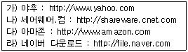
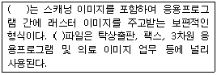
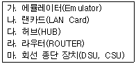
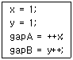
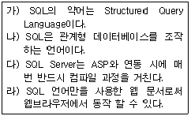
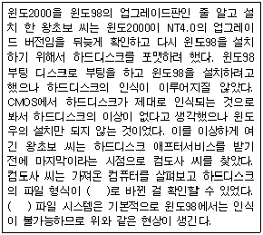
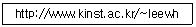
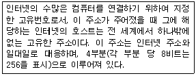

전자상거래운용사 (2010-09-04 기출문제)
1과목: 인터넷 일반
1. 다음 중 익명(anonymous) ftp 서버에 있는 파일을 검색할 수 있는 인터넷 서비스는?
- 유즈넷 서비스
- WAIS 서비스
- Archie 서비스
- Gopher 서비스
(정답률: 42%)

2. 다음 사이트와 관련된 설명 중 올바른 것은?

- 모두 전문분야 검색엔진 사이트이다.
- 모두 포탈 검색엔진 사이트이다.
- 모두 내부 콘텐츠 전용 검색엔진 사이트이다.
- 모두 검색기능을 가지고 있다.
(정답률: 90%)
3. 다음 괄호에 들어갈 가장 적절한 용어는?

- TIFF
- GIF
- WMF
- BMP
(정답률: 54%)
4. 웹 브라우저를 사용해서 이미지 파일이 포함된 인터넷 문서를 검색할 때 브라우저는 이전에 검색된 이미지 또는 문서 파일을 보다 빠르게 사용자에게 보여주기 위해서 캐슁을 한다. 캐슁된 파일을 정리하는 작업은 무엇인가?
- 디스크 공간 늘림
- 디스크 조각 모음
- 휴지통 비우기
- 인터넷 임시 파일 삭제
(정답률: 90%)
5. 다음 중 플러그인(Plug-In)의 종류로 보기에 가장 거리가 먼 소프트웨어는?
- Shockwave
- FlashPlayer
- SilverLight
- Photoshop
(정답률: 알수없음)
6. 다음에서 전용선을 이용한 인터넷 접속에 사용되는 장비를 모두 나열한 것은?

- 가, 나, 다, 라
- 나, 다, 라, 마
- 다, 라, 마
- 가, 나, 다, 라, 마
(정답률: 70%)
7. 다음 중 전자우편에서 쓰이는 용어와 가장 거리가 먼 것은?
- POP
- SMTP
- MIME
- HTTP
(정답률: 91%)
8. 다음 중 동적인 웹 페이지를 생성하기 위해서 사용하는 서버 측 스크립트 언어가 아닌 것은?
- PHP
- ASP
- JavaScript
- PERL
(정답률: 46%)
9. 다음 중 인터넷상에서 정보 보호를 위한 방법으로 가장 거리가 먼 것은?
- 웹서버 관리는 방화벽(Firewall)과 같은 보안소프트웨어를 활용한다.
- 인터넷 사용자는 일차적으로 본인의 개인 정보를 보호하기 위해 암호를 주기적으로 변경하는 것이 좋다.
- 정보의 유출을 막기 위해 웹 사이트 관리자는 중요한 정보를 백업하지 않아야 한다.
- 바이러스에 감염되지 않도록 하기 위해 주기적으로 백신 프로그램을 활용한다.
(정답률: 91%)
10. 다음은 자바스크립트의 연산자를 활용한 문장이다. gapA와 gapB의 값이 올바르게 기술된 항목은?

- gapA = 1, gapB = 2
- gapA = 1, gapB = 3
- gapA = 2, gapB = 1
- gapA = 3, gapB = 1
(정답률: 60%)
11. ＜FRAME＞태그에 사용되는 속성 중 프레임의 크기를 조절하지 못하도록 하는 속성은?
- marginwith, marginheight
- frameborder
- noborder
- noresize
(정답률: 70%)
12. 다음에서 SQL언어에 관한 설명이 올바른 것만을 나열한 것은?

- 가), 나)
- 나), 다)
- 가), 다)
- 다), 라)
(정답률: 알수없음)
13. 다음 중 서버(server) 측에서 프로세스(process)가 작동하는 웹 프로그래밍 관련 기술로만 묶인 것은?
- ASP, JSP, HTML
- JSP, Java Applet, ActiveX control
- ASP, JSP, PHP
- ActiveX control, Java Applet, Java Script
(정답률: 59%)
14. 다음 중 사용자 입력을 받기 위한 폼 작성에서 입력 양식지정에 사용하는 ＜INPUT＞ 태그의 속성에 해당되지 않는 것은?
- METHOD
- NAME
- TYPE
- VALUE
(정답률: 65%)
15. 인터넷에서 지켜야할 예의범절을 네티켓이라 한다. 다음 중 홈페이지 제작 시 적절한 네티켓으로 보기 어려운 것은?
- 홈페이지가 사용자에게 화려한 인상을 줄 수 있도록 가급적이면 큰이미지나 동영상 파일을 게재한다.
- 공개용 프로그램을 자료실에 등록하여 사용자에게 편의를 제공한다.
- 정보는 최신의 것으로 방문자에게 신선한 감을 주어야 한다.
- 글을 인용할 경우에는 출처를 기재한다.
(정답률: 84%)
16. 다음 중 거래 정보 보안에서 제공하여야 할 요소가 아닌 것은?
- 기밀성(Confidentially)
- 인증(Authentication)
- 무결성(Integrity)
- 용이성(Usability)
(정답률: 100%)
17. 다음 중 HTML에 관한 설명으로 가장 거리가 먼 것은?
- HTML은 Hyper Text Markup Language의 약자이다.
- 인터넷상에서 문서교환을 위해 만든 마크업(Markup) 표준 언어인 SGML(Standard Generalized Markup Language)
- 문서의 형식과 화면출력 속성을 정의한다.
- ‘.html' 또는 ’.htm‘의 확장자를 갖는다.
(정답률: 알수없음)
18. 다음 중 자바스크립트에서 사용하는 배열에 대한 설명을 잘못 설명한 것은?
- 자바스크립트에서 숫자로 된 배열 첨자는 0부터 시작한다.
- 자바스크립트에서의 배열 요소는 한 가지 형의 데이터만 사용할 수 있다.
- 자바스크립트에서 배열 요소의 수는 length 속성을 이용하여 구한다.
- 자바스크립트에서 배열의 생성은 Array 객체를 이용한다.
(정답률: 알수없음)
19. CGI 폼 작성에 사용되는 ＜SELECT＞ 태그는 기본적으로 사용자가 여래 개의 목록 중에서 하나를 선택할 수 있는 풀다운 리스트 박스를 만들어 준다. 만약 리스트박스로 표현하려면 다음 중 어떤 속성을 1보다 큰 값으로 지정하여야 하는가?
- ROWS
- SELECTED
- SIZE
- VALUE
(정답률: 알수없음)
20. 다음 중 웹 문서를 작성할 수 있는 도구가 아닌 것은?
- 나모 웹에디터
- WYSIWYG
- 메모장
- 드림위버
(정답률: 54%)
2과목: 전자상거래 일반
21. 전자상거래 시스템을 백오피스와 프런트 오피스로 구분하는 경우 백오피스의 기능으로 가장 적절하지 않은 것은?
- 주문의 접수 및 배송
- 상품의 검색
- 반품 및 하자 처리
- 상품의 등록 및 수정
(정답률: 79%)
22. 다음 중 인터넷 소비자가 구매의사 결정에 있어 생각하게 되는 위험을 감소시키는 전략으로 가장 적절하지 못한 것은?
- 인터넷을 통한 구매 전에 사용 기회의 마련
- 수 · 배송과정을 한 눈에 알아볼 수 있도록 상품 추적 시스템 도입
- 다른 사이트에 비해 저렴한 상품 가격 제공
- 소비자들끼리 의견을 교환할 수 있는 장의 마련
(정답률: 50%)
23. 다음 중 전통적인 EDI나 CALS의 연장선으로 인터넷을 이용해 입찰공고와 협상을 통해 재화나 용역을 구매하는 전자상거래 유형은?
- 가상공동체(Virtual Community)
- 정보중개자(Information Borkerage)
- 전자경매(e-Auction)
- 전자구매(e-Procurement)
(정답률: 알수없음)
24. 다음은 소비자 측면의 상품 구매 의사결정 과정을 나타낸 것이다. ( )안에 들어갈 것으로 가장 부적합한 것은?
- 정보수집
- 가격조사
- 기 구매 사용자 의견 조사
- 공급능력조사
(정답률: 알수없음)
25. 다음 중 물류의 표준화와 관련된 용어가 아닌 것은?
- 표준 파렛트
- 표준바코드
- 표준인증마크
- 공동 집배송단지
(정답률: 알수없음)
26. 전자상거래의 특징에 대한 다음 설명 중 가장 옳지 않은 것은?
- 고객이 매장이나 상품을 직접 눈으로 보거나 만져볼 수 없다.
- 다품종 소량으로 생산되는 상품 판매에 적용하기 어렵다.
- 상품 가격 지불에 따른 안정성과 신뢰성 확보가 중요하다.
- 대상 고객이 인터넷을 사용하는 사람으로 한정된다.
(정답률: 90%)
27. 전통적 상거래와 전자상거래에 대한 비교 내용으로 가장 옳은 것은?
- 전통적 상거래에서는 유통경로가 짧으나 전자상거래는 유통경로가 길다.
- 전통적 상거래에서는 다양한 국가와 거래를할 수 있으나 전자상거래에서는 힘들다.
- 전통적 상거래에서는 밤늦은 시간에도 물건을 살 수 있으나 전자상거래는 어렵다.
- 전통적 상거래에서는 대금결제가 용이하나 전자상거래에서는 다소 어려움(번거로움)이 있다.
(정답률: 알수없음)
28. 인터넷 브랜드 구축을 위한 트래픽 유발 전략에 관한 설명 중 가장 옳지 않은 것은?
- 사이트 방문자가 더 오랫동안 머무르도록 하여 체류시간을 늘려야 한다.
- 키워드 검색시 자사의 도메인이 상위에 나타나도록 하는 것이 중요하다.
- 컨텐츠의 내용과 범위를 축소하여 사이트의 접속 속도를 빠르게 한다.
- 포털사이트에 이름을 올려놓아야 사용자에 대한 노출이 용이하다.
(정답률: 73%)
29. 다음 중 인터넷 시장세분화의 목적으로 적절하지 않은 것은?
- 마케팅 노력의 합리적이고 적합한 조정을 위하여
- 제품 선호성에 따라 동질성 시장으로 나누어 접근하기 위하여
- 전체시장을 대상으로 한 매스(mass)마케팅을 위하여
- 표적 시장을 탐색하기 위하여
(정답률: 알수없음)
30. 다음 중 물리적 상품과 구별되는 디지털 상품의 특성으로 가장 옳지 않은 것은?
- 재생산 시 낮은 변동비용
- 초기생산 시 낮은 고정비용
- 무형성
- 재생산 용이성
(정답률: 알수없음)
31. 다음 중 프랜차이즈 방식에 의한 배송시스템을 바르게 설명한 것은?
- 중간 물류센터나 물류 창고를 거쳐서 배송된다.
- 타 배송시스템의 유형에 비하여 배송비용이 낮다.
- 신선도가 중요시되는 제품의 배송에 주로 사용된다.
- 배송의 빈도수나 배송물품이 많은 경우에 사용되는 배송시스템이다.
(정답률: 알수없음)
32. 다음 중 역경매(reverse auction)의 개념을 가장 바르게 설명한 것은?
- 다수의 판매자가 다수의 구매자를 대상으로 호가하는 것을 말한다.
- 단일의 판매자가 다수의 구매자로부터 최고의 호가에 낙찰시키는 것이다.
- 일차로 경매된 물품을 재차 경매에 올려 판매하는 것을 말한다.
- 단일의 구매자가 다수의 판매자로부터 상품을 구매할 경우에 이용하는 것이다.
(정답률: 46%)
33. 다음 중 전자상거래 결제에 있어서 신용카드 결제시 일반적으로 입력하는 데이터로 적합하지 않은 것은?
- 신용카드번호
- 신용카드 유효기간
- 신용카드 비밀번호
- 신용카드 서명
(정답률: 84%)
34. 다음 중 물류관리의 패러다임 변화를 잘못 기술하고 있는 것은?
- 물류활동의 분업 및 전문화의 원칙 → 물류활동의 통합화원칙
- 물류기능 중심의 업무구조→물류 프로세스 중심의 업무구조
- 대량고객 지향적 영업활동 → 개별고객 지향적 영업활동
- 시간중심의 관리체제 → 비용중심의 관리체제
(정답률: 84%)
35. 다음 전자상거래의 유형 중에서 정부와 시민들 사이의 세금 반환 등에 관한 전자적 처리를 수행하는 것은 어느 유형인가?
- G2B
- B2C
- G2C
- C2C
(정답률: 100%)
36. 다음 중 전자상거래의 현황과 전망에 대한 설명으로 가장 적절하지 않은 것은?
- 전자상거래는 인터넷을 이용한 온라인 쇼핑을 포함하기도 한다.
- 기업과 기업 간의 전자상거래는 인터넷을 사용하지 않은 사례도 있다.
- 인터넷 기반의 전자상거래가 확산된 동기중의 하나는 저렴한 거래비용 때문이다.
- 모든 상거래는 인터넷을 통해서 이루어질 것이다.
(정답률: 80%)
37. 다음 중 고객 분석에서 데이터조사 방법으로 가장 옳지 않은 것은?
- 검색 키워드 활용법 : 검색 엔진의 검색 키워드로 고객이 원하는 정보가 무엇인가를 파악하는 방법
- 로그 파일 활용법 : 고객이 방문한 페이지와 이동 경로 자료를 분석하는 방법
- 공개 정보 활용법 : 고객의 요구 사항을 직접듣기위해 많은 사이트들이 최근에 값비싼 경품을 내걸면서 사용하고 있는 방식
- 사용성 평가 : 과학적인 실험이나 관찰 등의 기법을 통해 객관적인 방법으로 고객의 불편사항을 진단하고 대안을 추천해 주는 방법
(정답률: 70%)
38. 기업에 이한 독단적이고 강압적인 마케팅이 아니라, 고객의 양해를 전제로 실시되는 마케팅을 무슨 마케팅이라고 하는가?
- 허용 마케팅(permission marketing)
- 바이러스 마케팅(virus marketing)
- 관계 마케팅(relationship marketing)
- 쌍방향 마케팅(interactive marketing)
(정답률: 60%)
39. 다음 중 아웃바운드 텔레마케팅(Outbound Telemarketing)에 가장 쉽게 적용될 수 있는 마케팅 활동은?
- 주문접수
- 예약
- 소비자 고충처리
- 시장조사
(정답률: 알수없음)
40. 다음 중 전자상거래 시스템 구축 시 반드시 포함시켜야 하는 시스템이라고 볼 수 없는 것은?
- 전자지불시스템
- 배송시스템
- 인증시스템
- EDI시스템
(정답률: 67%)
3과목: 컴퓨터 및 통신 일반
41. 다음은 서버의 종류 및 그와 관련된 설명이다. 다음 설명 중 가장 옳지 않은 것은?
- 전자메일 서버 : 사용자의 전자메일을 송수신하는 컴퓨터
- 웹 서버 : 웹브라우저를 이용하여 인터넷 홈페이지를 검색할 수 있는 컴퓨터
- NFS 서버 : 네트워크 파일 시스템으로 네트워크에 접속되어 있는 다른 컴퓨터의 파일 시스템을 공유하기 위한 분산 파일 공유 컴퓨터
- FTP 서버 : 파일전송 프로그램을 이용하여 사용자에게 파일을 송수신하는 컴퓨터
(정답률: 알수없음)
42. 다음과 같은 현상이 발생한 이유로 가장 적합한 것은?

- FAT16
- FAT32
- NTFS
- SAMBA
(정답률: 73%)
43. 인터넷으로 연결된 곳이면 어디에서나 원하는 파일을 올려 놓을 수도 또는 가져올 수 있는 서비스를 제공하는 서버는?
- FTP서버
- Mail서버
- 데이터베이스서버
- HTTP 서버
(정답률: 64%)
44. 웜(worm) 바이러스에 대한 설명 중 옳지 않은 것은?
- 자기 복제 기능을 가지고 있다.
- 주로 전자메일과 IRC를 통해서 전파된다.
- 자체적인 정보수집능력은 없으며 트로이목마 바이러스의 일종이다.
- Worm-Slammer도 이 바이러스의 일종이다.
(정답률: 46%)
45. 무선 이동 통신에 사용되는 전송 매체로 가장 옳은 것은?
- 광케이블
- 공간 전파
- 동축 선로
- 전력선
(정답률: 40%)
46. 디지털 데이터를 아날로그신호로 전송하는 방식 중 옳지 않은 것은?
- ASK : 진폭 인코딩 변조방법으로 광섬유로 디지털데이터 전송이 가능하다.
- FSK : 주파수 인코딩 변조방법으로 ASK보다 에러에 강하다.
- PSK : 위상 인코딩 변조방법으로 QPSK는 PSK의 확장된 방법이다.
- TSK : 시간 인코딩 변조방법으로 FSK와 유사한 방법이다.
(정답률: 알수없음)
47. 다음 중 통신 프로토콜의 기본 구성요소에 해당되지 않는 것은 무엇인가?
- 구문(Syntax)
- 의미(Semantics)
- 포맷(Format)
- 순서(Timing)
(정답률: 90%)
48. 다음 중 WWW(World Wide Web)에서 데이터를 액세스하는 데 사용되는 주된 프로토콜은 무엇인가?
- HTTP (Hypertext Transfer Protocol)
- SMTP (Simple Mail Transfer Protocol)
- FTP (File Transfer Protocol)
- DHCP (Dynamic Host Configuration Protocol)
(정답률: 77%)
49. 다음 중 마이크로소프트사의 윈도우즈 (MS Windows)기반의 운영체제인 윈도우즈2000에 대한 설명과 가장 거리가 먼 것은?
- TCP/IP, IPX/SPX, NetBEUI 등의 다양한 네트워크 프로토콜과 호환된다.
- 다중 사용자 환경을 지원한다.
- 기본적으로 IIS 웹서버는 내장하고 있지만 널리 사용되는 Apache 웹서버 사용은 불가능하다.
- 기본 파일시스템으로 NTFS를 사용한다.
(정답률: 90%)
50. 다음의 URL에 대하여 설명한 것 중 가장 옳지 못한 것은?

- http 는 Hyper Text Transfer Protocol의 약자로서 웹에서 사용되는 통신규약이다.
- :// 는 프로토콜과 나머지 URL을 구분하는 기호이다.
- kinst.ac.kr은 도메인 명이다.
- ~leewh는 해당파일의 이름이다.
(정답률: 75%)
51. 다음 중 시스템 소프트웨어에 속하지 않은 것만으로 묶인 것은?
- 운영체제, 컴파일러
- 유틸리티, 응용 소프트웨어
- 컴파일러, 유틸리티
- 응용 소프트웨어, 로더
(정답률: 47%)
52. 인터넷이 시간과 공간을 초월한 통신 서비스를 제공함으로써 사회 전반에 많은 영향을 끼치고 있다. 다음 인터넷 응용 산업 중에서 온라인상에서 상품을 사고파는 산업의 형태를 무엇이라 하는가?
- 원격 진료
- 전자 상거래
- 원격 교육
- 원격 게임
(정답률: 100%)
53. 2000년 2월 amazon.com, eBay, Yahoo 그리고 그 밖의 다른 유명한 전자상거래 관련 사이트들이 2일 동안 지속적으로 DDoS라는 DoS의 변종 공격을 받아 운영이 불가능한 사건이 발생하였다. DoS에 대한 설명으로 틀린 것은?
- Dos의 주요 공격 대상은 시각적인 서비스를하는 웹서버 또는 라우터, 네트워크 같은 기반 시설이다.
- Dos는 한 사용자가 시스템의 리소스를 독점하거나 모두 사용, 또는 파괴함으로써 다른 사용자들이 이 시스템의 서비스를 올바르게 사용할 수 없도록 한다.
- DoS 공격은 계획적으로 컴퓨터 자원들을 다운시키거나 서버에 많은 양의 네트워크 트래픽을 전송함으로써, 사용자들이 사이트에 접근하지 못하도록 자원을 고갈시킨다.
- DoS는 대부분 외국의 유명사이트를 공격목표로 삼고 있다.
(정답률: 알수없음)
54. 보조기억장치에 대한 설명과 가장 거리가 먼 것은?
- RAM을 보조하기 위해 사용한다.
- 비 휘발성의 특징을 가지고 있다.
- 반영구적으로 자료를 저장할 수 있다.
- 접근 속도가 느리므로 백업용으로 사용하기에는 적합하지 않다.
(정답률: 82%)
55. 다음 중 TCP/IP 프로토콜을 이용하는 통신 프로토콜로만 짝지어진 것은?
- (ㄱ) (ㄴ) (ㄷ)
- (ㄴ) (ㄷ) (ㄹ)
- (ㄴ) (ㄷ) (ㅁ)
- (ㄱ) (ㄷ) (ㄹ)
(정답률: 알수없음)
56. 전자 우편 시스템의 보안상의 취약점을 보완하고, 인터넷을 통해 전자 우편 시스템을 이용해 개인 정보 및 비밀 정보를 상대방에게 안전하게 전송하기 위해 개발된 기술이 아닌 것은?
- S/MIME
- PEM
- PGP
- SSL
(정답률: 알수없음)
57. 다음은 인터넷 주소체계에 대한 설명이다. 이에 알맞은 것은 어느 것인가?

- URL 주소
- IP 주소
- 도메인 네임
- 이메일 주소
(정답률: 90%)
58. IP 주소에 해당하는 도메인 네임을 찾아주는 서비스는?
- DNS
- DHCP
- TCP/IP
- SMTP
(정답률: 91%)
59. 웹 캐스팅과 관련된 용어의 설명으로 적절하지 않은 것은?
- 스트리밍은 인터넷에서 음성과 동영상을 실시간으로 받아 볼 수 있는 기술이다.
- 푸시(Push)기술은 원하는 정보를 검색 작업없이 사용자에게 뿌려주는 기술이다.
- 유니캐스팅은 서버에서 보내는 스트림이 라우터를 거치면서 무한히 복제되어 전달된다.
- 주문형 방송은 사용자가 원하는 컨텐츠를 선택하여 방송을 볼 수 있는 서비스이다.
(정답률: 알수없음)
60. 인터넷의 주소형식은 4개의 도메인 네임으로 구성된다. 다음 중 그 구성요소가 올바르지 않은 것은?
- 호스트 컴퓨터 도메인
- 소속기관 분류 도메인
- 전산망 분류 도메인
- 소속국가 도메인
(정답률: 알수없음)